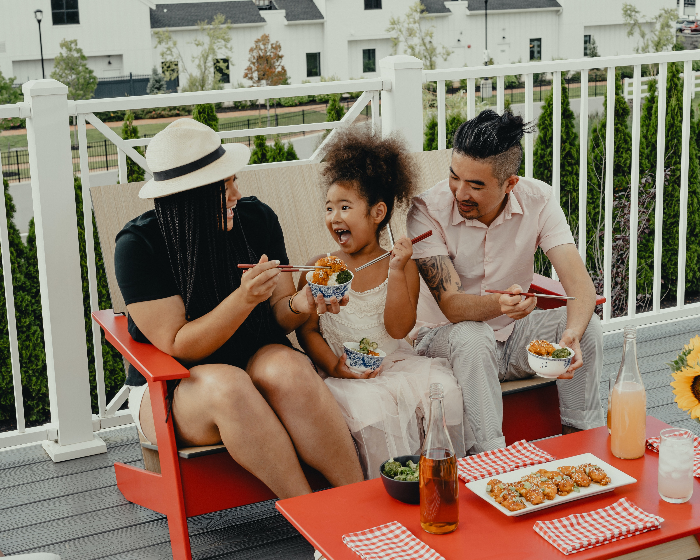

Ingredients
- Pack Raw Chicken Tenders
- 1 head of Broccoli
- 1 cup White Rice
- Cooking Spray
- Lemon Pepper Seasoning
- 1 ½ cup Water
- Sauce (if desired)
Directions
- 1 cup rice in rice cooker or stove top, follow directions on box or that come with the rice cooker
- Spray air fryer tray with cooking spray
- Place chicken tenders in a single layer in the air fryer
- Spray chicken with cooking spray and season with lemon pepper
- Set air fryer to 400 degrees
- Cook for 6 minutes
- While chicken is cooking, put a large pan on high heat with about 1 ½ cups of water
- Chop up broccoli, add to pan, and cover
- Stir broccoli occasionally, cook until soft, add more water if needed
- Flip chicken and respray and reseason
- Cook for 6 more minutes or until fully cooked
- Once the rice, broccoli, and chicken are all done, plate them together and add sauce if desired